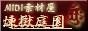
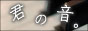
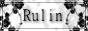
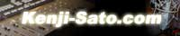
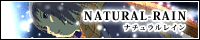
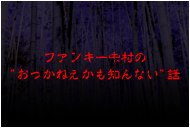
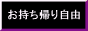
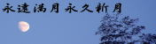

BGMに適したフリー音楽素材
http://www.hmix.net/
| サイト名 | コメント |
|---|---|
 煉獄庭園 |
煉獄小僧さんの運営される音楽素材サイトです。きっとご存知の方も多いでしょうね＾＾煉獄小僧さん主催の、とある企画に参加させていただいております。 |
CAMeLIA |
Maryさんの運営される音楽素材サイトです。素敵な曲が沢山！素材傾向は僕のサイトと近いかもしれません＾＾僕のお気に入りは「マリオネット」です。 |
音楽工房夢見月 |
こちらも有名な音楽素材サイトなのでご存知の方は沢山いらっしゃると思います＾＾優しく、心癒される素敵な音楽作品を多数公開されています。 |
Presence of Music |
Yusaku Kishigamiさんの作成した、クオリティの高い音楽素材を配布されています。 RPG系、ホラー系が充実しています。 |
Music Material |
涼さんの運営される音楽素材サイトです。幅広いジャンルの素材を多数公開されています。シンプルで、探し易いレイアウトは僕も見習いたいです^^; |
小森平の使い方 |
こちらもその筋では有名なサイトかと思います。小森さんの制作された高クオリティな効果音を無料で公開されています。 |
蒼月音 |
ベンズさんの運営されている音楽サイトです。ゲームへの使い勝手が良さそうな、いい感じの音楽素材を公開されています！ |
 君の音 |
君島三夜さんの運営される音楽サイト。美しいピアノの即興演奏が聴けます♪繊細で、語りかけてくる様なピアノが印象的です。 |
 Rulin |
笹原那太さんの運営されるサイト。大変多方面で活躍されている方で、声の活動の他、音楽素材の制作もされています。 |
 佐藤賢治 official Site |
HEY! HEY! HEY!やロンドンハーツ、アメトークなどでナレーターをされている、佐藤賢治さんのオフィシャルサイトです。一度ボイスサンプルを聴けば、ファンになる事間違いなしです！ |
project GAEA |
創作集団「ＧＡＥＡ」のウェブサイト。クオリティの高いイラストや小説、ＦＬＡＳＨやサウンドなど。とにかく見どころ満載です！ |
 ナチュラルレイン |
ナチュラルレインさんのグラフィックストーリ中心のサイトです。Yahoo!JAPAN『ネットの名作！泣けるサイト特集』にも選出。作品「夜明け前の遠い月」でコラボしてます。 |
土塊 |
ホラーゲームを中心に制作されている、堀井大介さんのサイト。秀逸なグラフィック作品が楽しめます。「死の霊園」「書いてある」「生と死の穴」「こっくりさんの墓」に楽曲を使用していただいてます。 |
 ファンキー中村の”おっかねぇかも知んない”話 |
怪談師ファンキー中村さんのサイトです。怖いだけでなく、涙を誘う怪談など、様々なレパートリーをお持ちの方です。ラジオのテーマ曲を作らせていただきました。 |
SILENT HUNTER website |
作曲家、静狩人さんのウェブサイト。クオリティの高い、素晴らしい楽曲を公開されています。僕もこの位のレベルになりたい！ |
Groovebox☆ShiroKuma |
塚越雄一朗さんの個人サイトです。楽曲や音素材の公開、楽曲制作ツールのレビュー、活動内容の記録等、見どころ満載です。音楽のクオリティも素晴らしいと思います！
|
 音楽の部屋 |
お持ち帰り＆ご利用自由のオリジナルMIDI･MP3 提供サイト。au着メロ・著作権消滅曲もあります。 サイト開設時から長くお付き合いいただいております。 |
りさぴょんのお・へ・や |
J-pop(Artest200名以上、1000曲以 上)・季節の曲・クリスマスソング、 VOICE etc.無料DLできます。温かいお人柄、おもてなしの精神がサイトにあふれています^^ |
西田シャトナー 演劇研究所 |
舞台演出家、西田シャトナー氏のウェブサイトです。仮面劇「FRUITS」と仮面劇「RELAX」には作曲家として参加させていただきました。折り紙作家としても有名な方です。 |
風のとまり木 |
少女、花などを題材に、tokumori様の描いたファンタジックな絵画作品が多数あります。 |
淡い光の窓辺 |
芸術家、東山紅都さんの作品が展示してあります。繊細な和風タッチの作品が多数あります。 |
SHU-JUNK |
管理人の親戚、グラフィックデザイナー、シュウのウェブサイトです。いろいろとお世話になってます。 |
夢一夜 |
美咲さんの詩のサイトです。詩人や芸術家のの交流の場になっています。 |
ロビンの森 |
Rikuさんの制作された、美しいアート作品が沢山公開されています。まるで、異世界を旅しているかのような気分になれます。 |
 永遠満月永久新月 |
詩と、写真と、イラストにより、管理人蒼羽さんの精神世界を表現されています。写真作品ではご自身がモデルをされています。 |
パソコンでビデオ編集 |
パソコンでビデオ編集する方法を、初心者向けに丁寧に解説されています。サイトデザインもシンプルで見やすく、解説も分かりやすく、素晴らしいサイトです。 |
CANDY PERFUME BOY |
携帯漫画家、貴咲光流さんの作品情報（BL作品）や美麗なイラストが堪能できます。「みだらめ〜五人のドS婿と支配される私」「獣欲同志」「ケダモノ男子に囚われて〜令嬢墜とし」等配信中との事です。 |